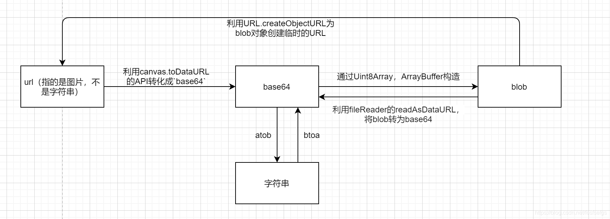
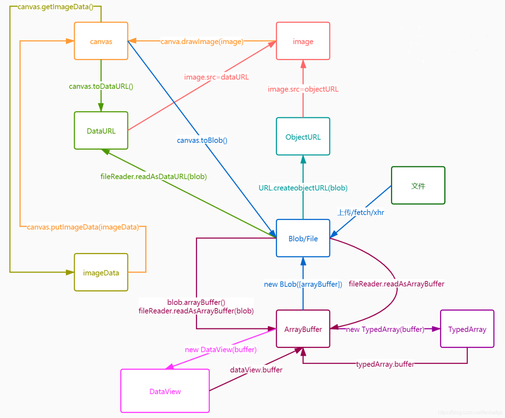

Canvas获取视频封面与添加水印
概述
在实际工作中，会遇到一类似获取视频封面等需求，当然，这个工作无需前端也能实现，但前端也能跨界救场，因为前端代码都运行在用户端，在机器性能过剩的情况下，前端可以实现这些类似功能来减少服务器的压力，同时有时也能获取更好的用户体验。当然，这些功能的核心都是基于Canvas实现的。
图片添加水印
这个在各家产品经常看到，现在我们来通过前端实现水印功能，假定我们通过input来将用户选择的图片添加水印，首先，需要将Bolb对象转为img对象
/*
@ desc bolb对象转image
*/
function blobToImg(blob) {
return new Promise((resolve, reject) => {
let reader = new FileReader()
reader.addEventListener('load', () => {
let img = new Image()
img.src = reader.result
img.addEventListener('load', () => resolve(img))
})
reader.readAsDataURL(blob)
})
}
接着，我们将得到的img对象转为canvas
/*
@ desc domObj转canvas
*/
function imgToCanvas({
obj,
width,
height
}) {
const canvas = document.createElement('canvas');
canvas.setAttribute('width', width);
canvas.setAttribute('height', height);
const ctx = canvas.getContext("2d");
ctx.drawImage(obj, 0, 0) // obj可以是任意dom對象
return canvas
}
現在开始进入关键功能：在canvas对象中添加水印
/*
@ desc 生成水印
*/
function watermark(canvas, text) {
return new Promise((resolve, reject) => {
const ctx = canvas.getContext('2d')
ctx.textAlign = 'right';
ctx.textBaseline = 'middle',
ctx.font = "14px Microsoft Yahei",
ctx.fillStyle = 'rgba(0, 0, 0, 0.6)',
ctx.fillText(text, canvas.width - 20, canvas.height - 20); // 生成文本的坐标
canvas.toBlob(blob => resolve(blob))
// 此处也可以直接通过canvas输出base64: canvas.toDataURL('image/png', '0.5');
})
}
最后我们将得到的bolb对象再次调用blobToImg方法得到最终的带水印图片。
获取视频首帧作为封面
我们通过视频地址创建一个video对象，同时监听timeupdate事件（播放位置发生改变时触发）
/*
@ desc 初始化视频对象，监听事件变化
*/
function initVideo(url, callback) {
const video = document.createElement('video')
video.src = url;
video.controls = true;
//必须要设置 video 的 crossOrigin = 'Anonymous'，对此元素的 CORS 请求将不设置凭据标志。否则无法调用toDataURL，会提示画布被污染
video.crossOrigin = "Anonymous";
video.addEventListener("timeupdate", () => {
const imgBase64 = getVideoCapture(video);
callback && callback(imgBase64)
})
return video
}
timeupdate事件触发时将videDom转为Canvas对象，并得到base64（调用了上面的imgToCanvas方法）
/*
@ desc 获取video对象对应帧率base64
*/
function getVideoCapture(video){
let canvas = imgToCanvas({
obj: video,
width: video.videoWidth,
height: video.videoHeight
})
return canvas.toDataURL('image/png', '0.5');
}
将得到的base64渲染到img标签内即可。
base64图片下载到本地
我们对上面的功能再添加一个保存到本地的功能，首先需要将base64图片转成Bolb对象：
/*
@ desc base64转Bolb对象
*/
function base64ToBlob(code){
let parts = code.split(";base64,");
// 获取图片类型
let contentType = parts[0].split(":")[1];
/**
* 解码base64
* Window atob() 方法
* encodedStr: 必需，是一个通过 btoa() 方法编码的字符串。
* 该方法返回一个解码的字符串。
*/
let raw = window.atob(parts[1]);
let rawLength = raw.length;
const uInt8Array= new Uint8Array(rawLength)
// 将字符转换成unicode值
for (let i = 0; i < rawLength; ++i) {
uInt8Array[i] = raw.charCodeAt(i);
}
return new Blob([uInt8Array], {type : contentType});
}
接着创建可下载文件的a标签并且触发（download属性）
/*
@ desc 保存base64图片到本地
*/
function downFile(code){
if (!code) return alert("base64不能为空");
const fileName = Date.now();
let aLink = document.createElement("a");
let blob = base64ToBlob(code);
let evt = document.createEvent("HTMLEvents");
evt.initEvent("click", true, true); //initEvent 不加后两个参数在FF下会报错 事件类型，是否冒泡，是否阻止浏览器的默认行为
aLink.download = fileName;
aLink.href = URL.createObjectURL(blob);
aLink.click();
}
其他：各种转换

更详细的版本

更详细的demo可参考graphics-project:demo1-canvas